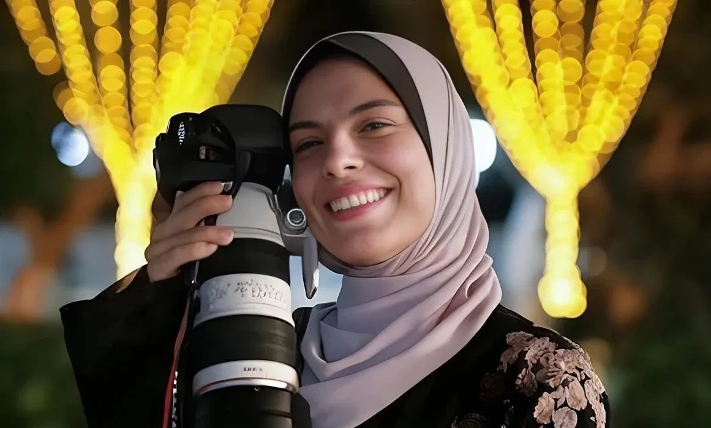

Publication d’archives
Guerre à Gaza : la photojournaliste Fatima Hassouna assassinée dans le bombardement de sa maison par Israël
Date indiquée par Facebook · 18 avril 2025
Texte conservé avec la publication
Guerre à Gaza : la photojournaliste Fatima Hassouna assassinée dans le bombardement de sa maison par Israël
La photojournaliste palestinienne, héroïne d’un documentaire sélectionné à Cannes en mai prochain, a été tuée le mercredi 16 avril dans le bombardement de sa maison familiale à Gaza.
Fatima Hassouna. Ce nom ne vous dit sans doute rien. Et pourtant, cette photo journaliste gazaouie documente la guerre au quotidien. Elle en est devenue l’une des victimes après le bombardement ciblé, par l’armée israélienne, de sa maison familiale le mercredi 16 avril, au cours duquel dix personnes ont trouvé la mort. Ce décès porte à 157 le nombre de journalistes palestiniens et travailleurs des médias tués depuis le déclenchement de l’offensive israélienne.
Pour l’heure, l’armée israélienne n’a pas souhaité répondre aux questions concernant ce bombardement dans le quartier d’Al Tuffah dans le nord est de Gaza. Amande Bazerolle, coordinatrice d’urgence de MSF à Gaza a déclaré dans un communiqué : « Gaza est devenue une fosse commune pour les Palestiniens et ceux qui leur viennent en aide. Nous assistons en temps réel à la destruction et au déplacement forcé de toute la population de Gaza ».
Son documentaire sélectionné au Festival de Cannes
Dans un triste écho de l’actualité, l’ACID (association pour le cinéma indépendant et sa diffusion) venait d’annoncer le mardi 15 avril, la sélection à Cannes du documentaire de Sepideh Farsi, Put your soul on your hand and walk. Dans ce film, fruit d’un échange d’un an par vidéos interposées entre la cinéaste iranienne exilée et la photojournaliste gazaouie, Fatima Hassouna apparaît en pleine lumière.
Un projet à propos duquel Sepideh Farsi explique : « Ce film est une fenêtre, ouverte par le miracle d’une rencontre avec Fatem (Fatima Hassouna), qui m’a permis de voir des fragments du massacre en cours des Palestiniens. Fatem est devenue mes yeux à Gaza, et moi, un lien entre elle et le monde extérieur. Nous avons maintenu cette ligne de vie pendant presque un an. Les bouts de pixels et de sons échangés entre nous, sont devenus le film que voici ».
Si le festival de Cannes pourrait devenir une caisse de résonance pour "Put your soul on your hand and walk", Fatima Hassouna ne verra hélas pas le film achevé.
De Michaël Mélinard dans L'Humanité
Contexte du dossier
L’article de Michaël Mélinard dans L’Humanité annonce la mort de la photojournaliste Fatima Hassouna, tuée le 16 avril avec des membres de sa famille, et évoque le documentaire de Sepideh Farsi « Put Your Soul on Your Hand and Walk ». Maurice Ulrich rend compte, dans un autre texte, de la mobilisation de journalistes à Paris pour leurs confrères palestiniens et l’accès indépendant à Gaza. Les deux auteurs gardent leur signature. Leur rapprochement restitue une même bataille : permettre que les vies, les images et les témoignages parviennent au public.

Sources
Archive rouge · export Facebook · AR-0002-FB-01144
À lire aussi · Journalistes tués à Gaza : venez voir…